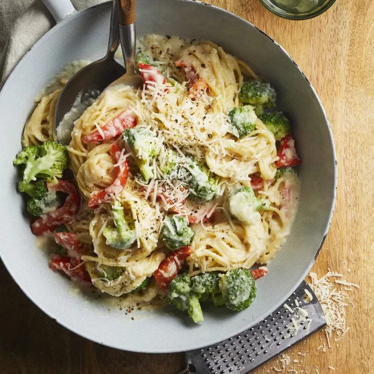

<< back
Pasta Primavera with Cauliflower Sauce
This pasta with cauliflower sauce is a terrific way to eat healthy. If
you're not using high-protein pasta, you can double the protein per
serving by adding 8 ounces of cooked and sliced chicken breast.

- Prep Time
- 15 mins
- Cook Time
- 25 mins
- Servings
- 4
Ingredients
- 1 tablespoon olive oil
- 1/2 cup chopped onion
- 2 cloves garlic, minced
-
3 cups cauliflower florets
- 3/4 cup vegetable broth
-
6 ounces multigrain spaghetti,
uncooked
-
1/2 finely shredded Parmesan
cheese, plus more for garnish
- 1/3 cup water
-
1/8 teaspoon black pepper
-
4 cups broccoli florets, cut
into 1-inch pieces
-
1 red bell pepper, cut into
bite-sized strips
-
2 tablespoons sliced fresh
basil
- 1 tablespoon lemon juice
-
1 teaspoon lemon zest
(optional)
Steps
-
Heat olive oil in a small saucepan
on medium heat
-
Add onion and
garlic; cook until
onion is tender
-
Stir in cauliflower and
broth; simmer until tender
- Let cool slightly
-
Bring a large pot of salted water to
a
boil
-
Cook spaghetti until tender yet firm
to the bite
-
Add broccoli and
bell pepper for the last 5 minutes
of cooking
-
Drain, reserving 1/2 cup cooking
water
- Return spaghetti to the pot
-
Transfer
cauliflower-broth mixture to a food
processor
-
Add Parmesan cheese,
water, and
black pepper
- Pulse until sauce is smooth
-
Pour cauliflower sauce over
spaghetti
-
Cook over low heat until heated
through
-
Stir in reserved
cooking water to reach desired
consistency
-
Garnish with
basil,
lemon juice,
zest, and
Parmesan cheese